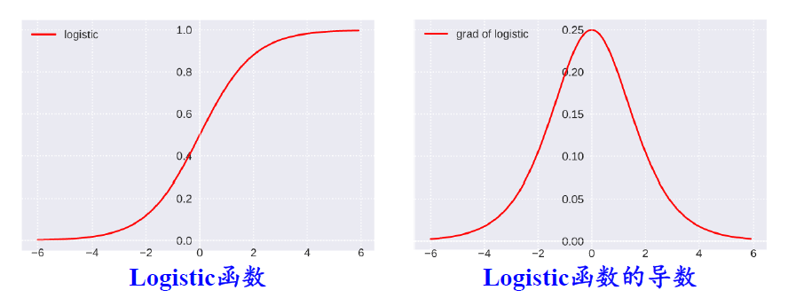

人工神经网络
人脑神经网络
人类大脑 = 神经元（近860亿） + 神经胶质细胞 + 神经干细胞 + 血管
神经元（neuron）：也叫神经细胞 (nerve cell)是人脑神经系统中最基本的单元。
- 细胞体：通过生物化学反应 引起细胞膜内外 电位差 发生改变形成兴奋或抑制状态。
- 细胞突起：由细胞体延伸出来：
- 树突：可接收刺激并将兴奋传入细胞体 每个神经元可以有一个或多个树突。
- 轴突：可把自身兴奋状态从细胞体传给另一个神经元，每个神经元只有一个轴突。
每个神经元与其他神经元相连，当它兴奋时就会向相连的神经元发送化学物质 从而改变这些神经元内的电位，如果神经元的电位超过一定阈值，它就会被激活即兴奋起来，然后向其他神经元发送化学物质 。
人工神经元模型
M-P神经元模型（McCulloch and Pitts）：神经元接收到来自其他 d 个神经元传递过来的输入信号，通过带权重的连接进行传递。神经元接收到的总输入值与神经元的阈值 bias 进行比较，然后通过激活函数处理产生神经元的输出 。
人工神经网络
input layer→hidden layer→output layer
x1,x2,⋯,xn
- 节点f：采用什么激活函数？
- 连边w1,w2,⋯,wd：权重（参数）是多少？
- 连接方式：如何设计层次结构？
一个解决异或问题的简单网络
感知器回顾
输入为 [x1;x2] 的单层单个神经元（输入层不计入层数），采用阶跃激活函数。
|
|
| (a) “与” 问题 (x1∧x2) |
|
| (b) “或” 问题 (x1∨x2) |
|
| © “非” 问题 (¬x1) |
|
| (d) “异或” 问题 (x1⊕x2) |
|
双层感知机解决异或问题
输入为 [x1;x2] 的双层神经元（输入层不计入层数），采用阶跃激活函数。
- 隐藏层 h 包含 2 个神经元：h=f(1)(x;W,c)
- 输出层 y 包含 1 个神经元：y=f(2)(h;w,b)
- 隐藏层采用线性整流激活函数（ReLU）：g(z)=max{0,z}
综上，整个模型为：
f(x;W,c,w,b)=f(2)(f(1)(x))=wTmax{0,WTx+c}+b
Example：
W=[1111],cT=[0−1],w=[1−2],b=0
- 输入 4 个样本：
X=⎣⎢⎢⎢⎡00110101⎦⎥⎥⎥⎤
- f(1)(X)
- WTX+c
- max{0,WTX+c}
XW+c=⎣⎢⎢⎢⎡0112−1001⎦⎥⎥⎥⎤
max{0,XW+c}=⎣⎢⎢⎢⎡01120001⎦⎥⎥⎥⎤
- f(2)(f(1)(x))：wTmax{0,WTx+c}+b
y=⎣⎢⎢⎢⎡0110⎦⎥⎥⎥⎤
神经网络结构
万能近似定理
通用近似定理（Universal Approximation Theorem）：令 ϕ(⋅) 是一个非常数、有界、单调递增的连续函数, JD 是一个 D 维的单位超立方体 [0,1]D,C(JD) 是定义在 JD 上的连续函数集合。对于任何一个函数 f∈C(JD), 存在一个整数 M, 和一组实数 vm,bm∈R 以及实数向量 wm∈RD,m=1,⋯,M, 以至于我们可以定义函数：
F(x)=m=1∑Mvmϕ(wm⊤x+bm)
作为函数 f 的近似实现，即
∣F(x)−f(x)∣<ϵ,∀x∈JD
其中 ϵ>0 是一个很小的正数。
根据通用近似定理，对于具有线性输出层和至少一个使用“挤压”性质的激活函数的隐藏层组成的神
经网络，只要其隐藏层神经元的数量足够多，它就可以以任意精度来近似任何一个定义在实数空间中的有界闭集函数。
通用近似定理应用到神经网络，将神经网络作为万能函数使用，用来进行复杂的特征转换，或逼近一个复杂的条件分布。
为什么要深度
- 单隐层网络可以近似任何函数，但其规模可能巨大：在最坏的情况下，需要指数级的隐藏单元才能近似某个函数。
- 随着深度的增加，网络的表示能力呈指数增加：
具有 d 个输入、深度为 l，每个隐藏层具有 n 个单元的深度整流网络可描述的线性区域的数量为：
O((nd)d(l−1)nd)
网络描述能力是深度的指数级。
[Goodfellow et al 2014] 手写体数字识别的实验结果
更深层次的网络具有更好的泛化能力 ⇒ 模型的性能随着深度的增加而不断提升。
[Goodfellow et al 2014] 手写体数字识别的实验结果
参数数量的增加未必一定会带来模型效果的提升。
常见神经网络结构
前馈神经网络
- 各个神经元按照接收信息的先后分成不同的组，每一组可看作一个神经层。
- 每一层中的神经元接收来自前一层神经元的输出，并输出给下一层神经元。
前馈神经网络：网络信息朝一个方向传播，没有反方向的信息传播——有向无环图。
记忆网络
- 神经元不但可以接收其他神经元的信息，也可以接收自己的历史信息。
- 神经元具有记忆功能，在不同的时刻具有不同的状态。
记忆网络/反馈网络：网络信息传播可以是单向或者双向传播——有向循环图/无向图。
- 循环神经网络
- Hopfield 网络
- 玻尔兹曼机
- 受限玻尔兹曼机
- …
图网络
- 定义在图数据结构上的神经网络
- 图中的每个节点都是由一个或者一组神经元构成
- 节点之间的连接可以是有向的，也可以是无向的
- 每个节点可以接收来自相邻节点或者自身的信息
图网络：图网络是前馈网络和记忆网络的泛化，包含许多不同的实现方式。
结构设计的其他考虑
除了深度和宽度外，神经网络的结构还具有其他方面的多样性。
- 改变层与层之间的连接方式：前一层的每个单元仅与后一层的一个小单元子集相连。
- 增加跳跃连接：从第 i 层与第 i+2 层甚至更高层之间建立连接。
前馈神经网络
结构与表示
前馈神经网络 （Feedforward Neural Network, FNN） 是最早发明的简单人工神经网络，也被称作多层感知器 （Multi Layer Perceptron, MLP）。
第 0 层：输入层
第 1 层：隐藏层
…
第 n−1 层：隐藏层
第 n 层：输出层
信号从输入层向输出层单向传播，整个网络中无反馈，可用一个有向无环图表示。
符号表示：用于建模
| 记号 |
含义 |
| L |
神经网络的层数 |
| Ml |
第 l 层神经元的个数 |
| fl(⋅) |
第 l 层神经元的激活函数 |
| W(l)∈RMl×Ml−1 |
第 l−1 层到第 l 层的权重矩阵 |
| b(l)∈RMl |
第 l−1 层到第 l 层的偏置 |
| z(l)∈RMl |
第 l 层神经元的净输入 (净活性值) |
| a(l)∈RMl |
第 l 层神经元的输出 (活性值) |
前馈神经网络的信息传递过程：
令 a(0)=x，
则第 l−1 层信息传播到第 l 层：z(l)=W(l)a(l−1)+b(l)a(l)=fl(z(l))
合并写为：
z(l)=W(l)fl−1(z(l−1))+b(l)
或者
a(l)=fl(W(l)a(l−1)+b(l))
如此下来，逐层传递，得到最后的输出 a(L)
a(0)→z(1)→a(1)→z(2)→⋯→a(L−1)→z(L)→a(L)
也就相当于复合函数：x⟶ϕ(x;W,b)
隐藏单元
设计要求：
- 连续并可导：可利用数值优化的方法来学习网络参数。
- 尽可能简单：提高网络计算效率。
- 值域在一个合适的区间：不能太大也不能太小，会影响训练的效率和稳定性。
Sigmoid型函数
Logistic 函数
σ(x)=1+exp(−x)1

Tanh 函数
tanh(x)=exp(x)+exp(−x)exp(x)−exp(−x)=2σ(2x)−1
Hard Logistic 函数
hard-logistic (x)=max(min(0.25x+0.5,1),0)
Hard Tanh 函数
这两个函数是对 Logistic 和 Tanh 函数的分段近似，与它们相比降低了计算开销。
整流线性单元 （ReLU）函数及其拓展
ReLU 函数
ReLU(x)={x,0,x≥0x<0=max(0,x)
Leaky ReLU ：带泄露的 ReLU 函数
LeakyReLU(x)={x,γx,x≥0x<0=max(0,x)+γmin(0,x)
指数线性单元 ELU
ELU(x)={x,γ(exp(x)−1),x≥0x<0=max(0,x)+min(0,γ(exp(x)−1))
Softplus
Softplus(x)=log(1+exp(x))
其他激活函数
Swish 函数
swish(x)=xσ(βx)=1+exp(−βx)x
- 当 β=0，为线性函数
- 当 β→∞，近似 ReLU 函数
- 可看成线性函数和 ReLU 之间的非线性插值函数
高斯误差线性单元（GELU 函数）
GELU(x)=xP(X≤x)≈xσ(1.702x)
Maxout 单元
Maxout：将神经元的净输入 z 分为 K 组（每个组有一个权重向量和偏置），每一组均为线性函数。——任意凸函数的分段线性分布。
输出单元
线性输出单元
y^=wTh+b
常用于输出条件高斯分布，适合连续值预测（回归）问题。
最大化似然（最小化负对数似然）等价于最小化均方误差，均方误差损失函数：
L(y,y^)=N1n=1∑N∥∥∥∥y^(n)−y(n)∥∥∥∥2
- y(n)：真实值
- y^(n)：预测值
- N：样本数
Sigmoid单元
y^=σ(wTh+b)=1+exp(−wTh−b)1
常用于输出伯努利分布（Bernoulli Distribution），适合二分类问题。
交叉熵损失函数：
L(y,y^)=−N1n=1∑N(y(n)logy^(n)+(1−y(n))log(1−y^(n)))
- y(n)：真实值
- y^(n)：预测值
- N：样本数
Softmax单元
y^c=softmax(wcTh+bc)=∑j=1Cexp(wcT+bc)exp(wcTh+bc)
常用于输出范畴分布（Multinoulli Distribution）/分类分布（Categotical Distribution），适合多分类问题。
交叉熵损失函数：
L(y,y)=−N1n=1∑N(y(n))Tlogy(n)
- y(n)=[y1(n),y2(n),…,yC(n)]T：真实标签向量
- y(n)=[y^1(n),y^2(n),…,y^C(n)]T：预测标签概率向量
- N：样本数
- C：标签数
参数学习
学习准则
假设神经网络采用交叉熵损失函数，
对于一个样本 (x,y) ，损失函数：
L(y,y)=−yTlogy
y∈{0,1}C：标签 y 对应的 one-hot 向向量表示。
对于给定的数据集 D={(x(n),y(n))}n=1N，模型在数据集 D 上的结构化风险函数：
R(W,b)=−N1n=1∑NL(y(n),y(n))+21λ∥W∥F2
- W：网络参数
- b：网络参数
- λ：超参数
正则化项 ∥W∥F2
∥W∥F2=l=1∑Li=1∑Mlj=1∑Ml−1(wij(l))2
梯度下降
网络参数通过梯度下降法进行学习，在每次迭代中第 l 层的参数 W(l) 和 b(l) 更新：
W(l)b(l)←W(l)−α∂W(l)∂R(W,b)=W(l)−α⎝⎜⎛N1n=1∑N⎝⎜⎛∂W(l)∂L(y(n),y^(n))⎠⎟⎞+λW(l)⎠⎟⎞←b(l)−α∂b(l)∂R(W,b)=b(l)−α⎝⎜⎛N1n=1∑N⎝⎜⎛∂b(l)∂L(y(n),y^(n))⎠⎟⎞⎠⎟⎞
通过链式法则可以逐一对每个参数求偏导，但效率低下，在神经网络的训练中经常使用反向传播算法来高效地计算梯度：其中核心的技术就是链式法则。
反向传播算法
微分链式法则
反向传播算法
给定一个样本 (x,y)，假设神经网络输出为 y,
损失函数为 L(y,y)，采用梯度下降法需要计算损失函数关于每个参数的偏导数 。
如何高效计算前馈神经网络中参数的偏导数——**反向传播算法（Back Propagation，BP）**算法
考虑求第 l 层中参数 W(l) 和 b(l) 的偏导数，由于 z(l)=W(l)a(l−1)+b(l) ，根据链式法则:
∂wij(l)∂L(y,y)=∂wij(l)∂z(l)∂z(l)∂L(y,y)∂b(l)∂L(y,y)=∂b(l)∂z(l)∂z(l)∂L(y,y)
定义 δ(l)≜∂z(l)∂L(y,y)：第 l 层的误差项。
- ∂wij(l)∂z(l)，z(l)=W(l)a(l−1)+b(l)
∂wij(l)∂z(l)=[∂wij(l)∂zi(l),…,∂wij(l)∂zi(l),…,∂wij(l)∂zMl(l)]=⎣⎢⎡0,…,∂wij(l)∂(∑k=1Ml−1wik(l)ak(l−1)+bi(l)),…,0⎦⎥⎤=[0,…,aj(l−1),…,0]∈R1×Ml
- ∂b(l)∂z(l)，z(l)=W(l)a(l−1)+b(l)
∂b(l)∂z(l)=IMl∈RMl×Ml
- δ(l)≜∂z(l)∂L(y,y)，z(l+1)=W(l+1)a(l)+b(l+1),a(l)=fl(z(l))
∂z(l)∂L(y,y)=∂z(l)∂a(l)∂a(l)∂z(l+1)∂z(l+1)∂L(y,y)
又 ∂z(l+1)∂L(y,y)=δ(l+1)∈RM(l+1)×1
∂z(l)∂a(l)=∂z(l)∂fl(z(l))=diag(fl′(z(l)))∈RMl×Ml∂a(l)∂z(l+1)=(W(l+1))T∈RMl×Ml+1
所以
δ(l)≜∂z(l)∂L(y,y^)=diag(fl′(z(l)))(W(l+1))Tδ(l+1)=fl′(z(l))⊙((W(l+1))Tδ(l+1))∈RMl
- δ(L)≜∂z(L)∂L(y,y)，y=a(L)=fL(z(L))
δ(L)≜∂z(L)∂L(y,y)=∂z(L)∂y∂y^∂L(y,y)=∂z(L)∂fL(z(L))∂y∂L(y,y)=diag(fL′(z(L)))∂y∂L(y,y)=fL′(z(L))⊙∂y∂L(y,y)∈RML
计算上面的三个偏导数，可得到第 l 层的梯度：
∂wij(l)∂L(y,y)=∂wij(l)∂z(l)∂z(l)∂L(y,y)=[0,…,aj(l−1),…,0]δ(l)=[0,…,aj(l−1),…,0][δ1(l),…,δi(l),…,δMl(l)]T=δi(l)aj(l−1)
相当于向量 δ(l) 和向量 a(l−1) 的外积的第 i,j 个元素，即：
[∂W(l)∂L(y,y^)]ij=[δ(l)(a(l−1))T]ij
因此：
- L(y,y) 关于第 l 层权重 W(l) 的梯度为：
∂W(l)∂L(y,y^)=δ(l)(a(l−1))T∈RMl×Ml−1
- L(y,y^) 关于第 l 层偏置 b(l) 的梯度为：
∂b(l)∂L(y,y^)=δ(l)∈RMl
自动梯度计算
数值微分
数值微分（Numerical Differentiation）：
f′(x)=Δx→0limΔxf(x+Δx)−f(x)
实际应用：
f′(x)=Δx→0lim2Δxf(x+Δx)−f(x−Δx)
符号微分
符号微分（Symbolic Differentiation）：一种基于符号计算代数计算 的自动求导方法，需求解带变量的数学表达式。
自动微分
自动微分（Automatic Differentiation）：一种介于数值微分和符号微分之间的方法。将符号微分法应用于最基本的算子，比如常数、幂函数、指数函数、对数函数、三角函数等，然后将其代入数值，保留中间结果，最后再应用于整个函数。
- 数值微分强调一开始直接代入数值近似求解
- 符号微分强调直接对表达式进行求解，最后才代入数值；
计算图（Computational Graph）：将复合函数分解为一系列基本操作，并以图的形式连接。
实例：
f(x;w,b)=exp(−(wx+b))+11
f(x;w,b) 关于参数 w 和 b 的导数可以通过计算图上的路径上的所有导数连乘得到：
∂w∂f(x;w,b)=∂h6∂f(x;w,b)∂h5∂h6∂h4∂h5∂h3∂h4∂h2∂h3∂h1∂h2∂w∂h1∂b∂f(x;w,b)=∂h6∂f(x;w,b)∂h5∂h6∂h4∂h5∂h3∂h4∂h2∂h3∂b∂h2
静态计算图（Static Computational Graph）：在编译时构建计算图，构建好后在程序运行时不能改变；在构建时可以进行优化、并行能力强；灵活性较差。
动态计算图（Dynamic Computational Graph）：在程序运行时构建计算图；不容易优化，当不同输入所使用的网络结构不一样时，难以并行计算；灵活性较高。
神经网络参数优化的主要问题
非凸优化
梯度消失